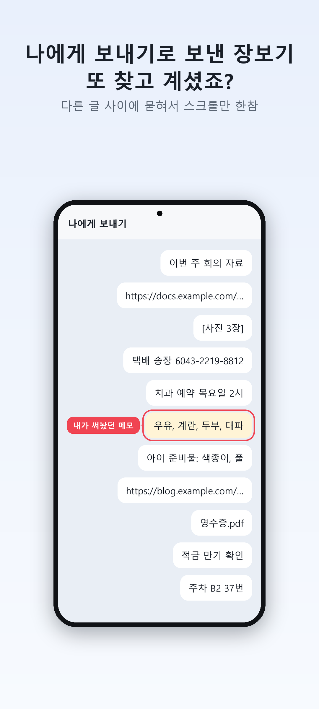
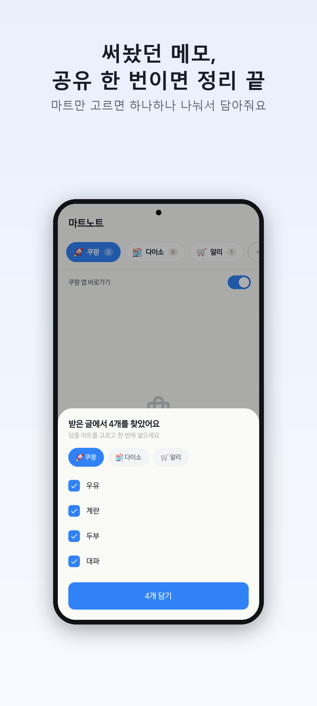
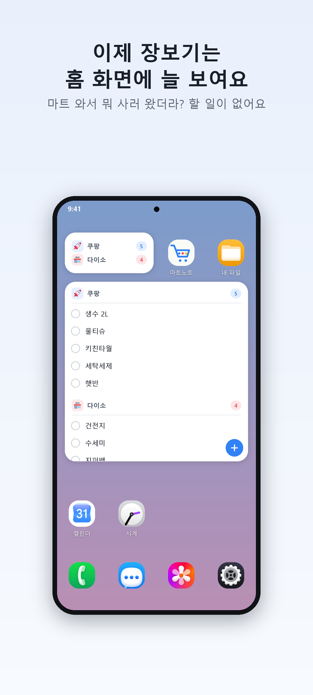
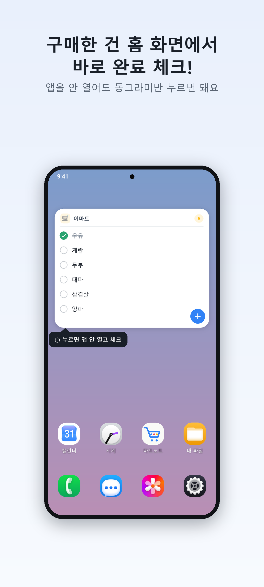
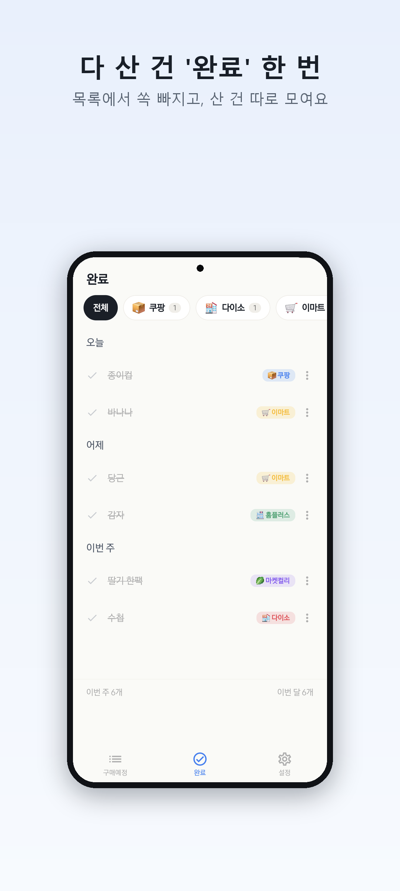
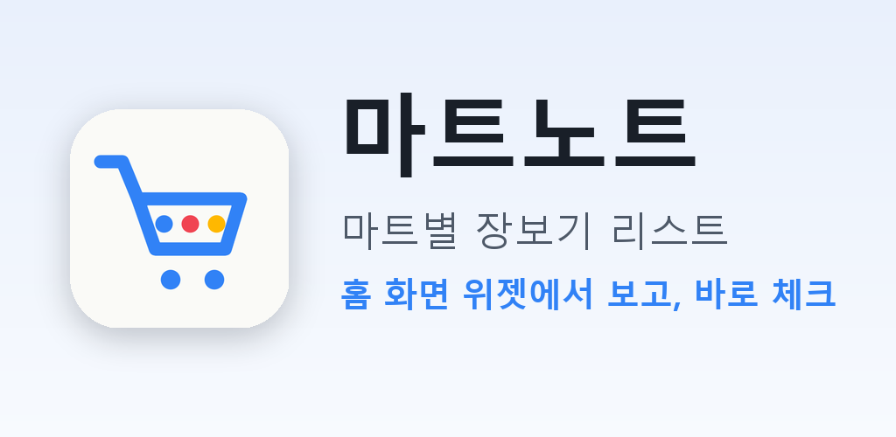

마트노트 1.4.0 출시 자료
버전 1.4.0 (versionCode 10) · 패키지 com.rldjrgo.grocerynote · 기본 언어 한국어
올리는 순서
- Play 콘솔 → 마트노트 → 설정 → 앱 서명에서 "업로드 키 인증서" SHA-1이 아래 지문과 같은지 확인
- 프로덕션(또는 테스트 트랙) → 새 버전 만들기 → AAB 업로드:
5_업로드파일/martnote-1.4.0-vc10.aab - 출시 노트 칸에 아래 출시 노트 복사해서 붙여넣기
- 스토어 등록정보 → 앱 이름·짧은 설명·자세한 설명 붙여넣기
- 휴대전화 스크린샷: 기존 8장 모두 삭제 →
1_스크린샷의 01~06을 순서대로 업로드 - 그래픽 이미지(피처):
2_피처그래픽/feature_graphic_1024x500.png교체 · 앱 아이콘은 그대로 - 저장 → 검토 제출
| 서명 지문 SHA-1 | 32:EF:85:73:9C:92:84:E7:0A:30:F7:27:18:9F:31:46:D4:6E:43:F5 |
| 알아둘 것 | 위젯이 5종 → 2종으로 바뀌어, 예전 위젯을 놓아 둔 사용자는 다시 추가해야 해요(출시 노트에 안내 포함). "카톡/카카오톡" 단어는 문구·이미지 어디에도 쓰지 않았어요(타사 상표). |
문구
출시 노트 (이번 업데이트 내용)
✅ 위젯에서 바로 체크 홈 화면 목록 위젯의 동그라미를 누르면 앱을 안 열어도 체크돼요. 🧩 위젯이 2가지로 깔끔해졌어요 · 목록 위젯: 살 것 목록을 보고 바로 체크 (전체 마트 또는 한 마트) · 개수 위젯: 마트별 남은 개수만 작게 ※ 예전 위젯을 쓰셨다면 홈 화면에서 한 번 다시 추가해 주세요. 💬 보내둔 장보기, 한 번에 옮겨요 나에게 보내기로 적어둔 목록을 마트노트로 공유하면 줄마다 항목으로 나눠져요. ↕️ 항목을 꾹 눌러 위아래로 끌면 순서가 바뀌어요. 🔔 알림 버튼은 ⋮ 메뉴 안으로 옮겼어요.
앱 이름
마트노트 - 마트 장보기 메모, 쇼핑 체크리스트
짧은 설명
나에게 보내기에 묻히던 장보기 메모, 마트별 쇼핑 리스트로. 홈 화면 위젯에서 보고 바로 체크.
자세한 설명
🛒 나에게 보내기로 장보기 보내뒀다가, 다른 글에 묻혀서 못 찾은 적 있죠? "우유, 계란, 휴지…" 적어두고 마트에 갔는데 링크, 사진, 다른 메모 사이에서 한참 스크롤하고 계셨다면, 마트노트를 써 보세요. 장보기만 따로, 홈 화면 위젯에 늘 보여요. 쿠팡에서 살 것, 다이소에서 살 것, 이마트에서 살 것… 한 리스트에 다 적으면 마트에서 헷갈리시죠? 마트노트는 마트별로 리스트를 따로 만들어요. 탭 하나로 마트를 바꾸고, 그 마트에서 살 것만 깔끔하게 봅니다. ━━━━━━━━━━━━━━━ ✨ 이런 분께 딱이에요 ━━━━━━━━━━━━━━━ • 여러 마트를 돌며 장 보는 분 • 나에게 보내기·메모장에 장보기를 적던 분 • 장보기 메모가 항상 뒤섞여 헷갈리던 분 • 복잡한 가계부 말고, 딱 "살 것"만 적고 싶은 분 ━━━━━━━━━━━━━━━ 🎯 마트노트의 4가지 특징 ━━━━━━━━━━━━━━━ 1) 마트별 분리 리스트 쿠팡·다이소·이마트·홈플러스·마켓컬리… 원하는 만큼 마트를 추가하고 마트마다 색으로 구분해 한눈에 정리합니다. 2) 쇼핑 앱 바로가기 🔍 NEW 적어둔 항목 옆 돋보기를 누르면 그 마트의 쇼핑 앱에서 바로 검색돼요. 쿠팡·마켓컬리·11번가·옥션·테무는 검색 결과까지 한 번에, 홈플러스·SSG·G마켓·이마트·다이소몰 등도 마트 이름에 맞춰 연결해요. 앱이 없으면 설치 화면으로 안내하고, 마트마다 켜고 끌 수 있어요. 3) 홈 화면 위젯 — 보고, 바로 체크 NEW 목록 위젯: 살 것이 홈 화면에 그대로. 동그라미를 누르면 앱을 열지 않아도 바로 체크돼요. 전체 마트를 이어서 보거나 한 마트만 골라 둘 수 있고, 스크롤도 돼요. 개수 위젯: 마트별로 몇 개 남았는지만 작게. 크기는 홈 화면에서 자유롭게 늘이고 줄일 수 있어요. 4) 1초 추가, 1초 체크 가격·수량·메모 입력 없이 이름만 적으면 끝. 다 산 항목은 가볍게 체크해 깔끔하게 정리됩니다. ━━━━━━━━━━━━━━━ 💬 메신저 메모도 한 번에 NEW ━━━━━━━━━━━━━━━ 메신저에 적어둔 목록을 길게 눌러 "공유 → 마트노트"를 고르면 줄마다 항목으로 나눠져요. 마트만 고르고 담기를 누르면 끝. 가족에게 보낼 때도 버튼 하나로 목록을 메신저로 보낼 수 있어요. ━━━━━━━━━━━━━━━ 🎤 말로도 추가돼요 ━━━━━━━━━━━━━━━ 타이핑이 번거로울 땐 음성추가 버튼을 누르고 말하세요. "라면" 한마디면 바로 담깁니다. 🔔 깜빡 방지 알림 "이건 꼭 사야지" 싶은 항목엔 알림을 설정해 두세요. 정한 시간에 한 번 알려드려요. 🌙 다크 모드 밤에도 눈이 편하게, 자동 다크 모드를 지원합니다. ━━━━━━━━━━━━━━━ 초간단하게, 딱 필요한 것만. 복잡한 장보기 메모는 이제 그만. 마트별 장보기 리스트, 쇼핑 체크리스트를 마트노트 하나로. 마트노트로 깔끔하게 정리하세요.
휴대전화 스크린샷 (1080×2400, 이 순서로)

나에게 보내기로 보낸 장보기 또 찾고 계셨죠?

써놨던 메모, 공유 한 번이면 정리 끝

폰만 켜면 살 게 다 보여요

구매한 건 홈 화면에서 바로 완료 체크!

생각날 때 이름만 톡 적으면 끝

다 산 건 '완료' 한 번
그래픽 이미지 (1024×500)
